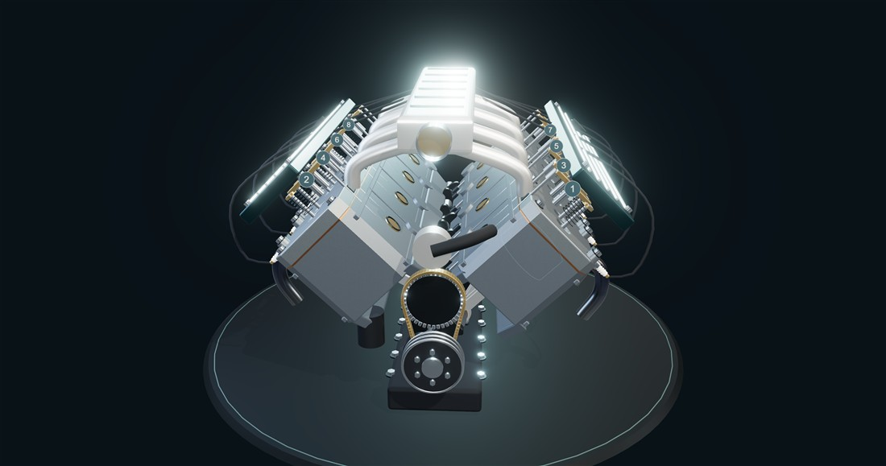

↗ OPEN INTERACTIVE DEMOV8 Engine Laboratory
Eight cylinders. One synchronized machine. Slice through a working cross-plane V8 and follow the motion from ignition to crankshaft.
- Cutaway & exploded views
- Clickable components
- Guided walkthrough
- Motion charts
WebGL 2 · Desktop & mobile · Idealized teaching model
8 cylinders16 valves720° cycle